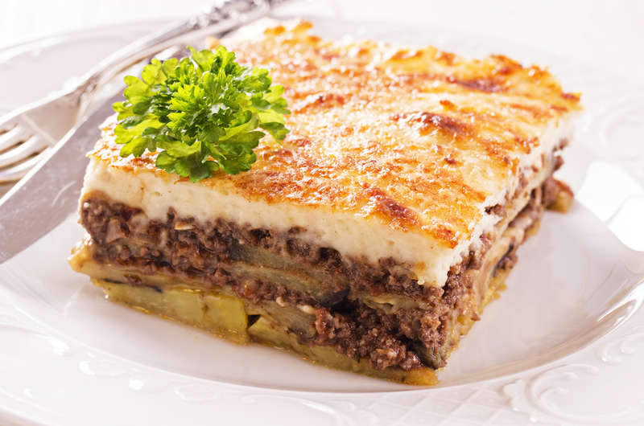

Greek cuisine is a Mediterranean cuisine. Contemporary Greek cookery makes wide use of vegetables, olive oil, grains, fish, wine (white and red), and meat (including lamb, poultry, veal, beef, rabbit, and pork). Other important ingredients include olives, pasta (especially hilopites, a kind of pasta similar to tagliatelle), cheese, lemon juice, herbs, bread, and yogurt. The most commonly used grain is wheat; barley is also used. Common dessert ingredients include nuts, honey, fruits, and filo pastries. It is strongly influenced by Ottoman cuisine and thus, (especially the cuisine of Anatolian Greeks), shares foods such as baklava, tzatziki, moussaka, dolmades, yuvarlakia and keftedes with Turkey and the neighboring countries. It is also influenced by Italian cuisine and cuisines from the northern countries. Additionally, in specific regions it includes several kinds of pasta, like hilopites, goglies (goges) etc
Greece has an ancient culinary tradition dating back several millennia, and over the centuries Greek cuisine has evolved and absorbed numerous influences and influenced many cuisines itself.
Some dishes can be traced back to ancient Greece: lentil soup, fasolada, retsina (white or rosé wine flavored with pine resin) and pasteli (candy bar with sesame seeds baked with honey); some to the Hellenistic and Roman periods: loukaniko (dried pork sausage); and Byzantium: feta cheese, avgotaraho (cured fish roe) and paximadi (traditional hard bread baked from wheat, barley and rye). There are also many ancient and Byzantine dishes which are no longer consumed: porridge as the main staple, fish sauce, and salt water mixed into wine.
Many dishes entered during the Ottoman era from the Levant and other near-eastern staples, especially these that came to prominence and as broader consumption in Ottoman cuisine namely: moussaka (of Arabian origin), tzatziki, yuvarlakia, kofta, boureki, baklava and more.
The Ottoman Empire having its origins from pastoral nomads in the Eurasian and middle eastern steppe, were largely consigned to diets of minced meats and cheeses with little to no grain as evident with Adana style kofta and other traditionally Turkish staples from the Eurasian steppe. 